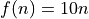

Lezione 7.1 - Soluzioni
Esercizi
Creare a mano:
Un dizionario vuoto. Controllare che sia vuoto con
len().Un dizionario
pronomiche rappresenta queste corrispondenze:1 -> "io" 2 -> "tu" 3 -> "egli" ...
Crearlo in due modi:
In una sola riga di codice.
Partendo da un dizionario vuoto ed aggiungendo passo passo tutte le coppie chiave valore.
Un dizionario
decuplo_diche implementa la funzione , che associa ogni chiave (un intero) al suo decuplo.Le chiavi devono essere gli interi da 1 a 5.
Una volta costruito il dizionario, applicarlo a tutti gli elementi di
range(2, 5)con una list comprehension e stampare a schermo il risultato.Poi fare la stessa cosa, pero’ per tutte le chiavi di
decuplo_di.Hint: la vista sulle chiavi si puo’ ottenere con
keys().Un dizionario
parenti_diche rappresenta questa rete:GIULIA ---- FRANCO ---- MATTEO | | + ----- BENEDETTA ------+
come nell’esempio visto in precedenza.
Una volta costruito il dizionario, stampare a schermo il numero di parenti di
"GIULIA".Un dizionario
da_2_bit_a_interoche rappresenta la mappa dalle seguenti coppie di interi ad intero:0, 0 -> 0 # 0*2**1 + 0*2**0 = 0 0, 1 -> 1 # 0*2**1 + 1*2**0 = 1 1, 0 -> 2 # 1*2**1 + 0*2**0 = 2 1, 1 -> 3 # 1*2**1 + 1*2**0 = 3 ^^^^ ^ ^^^^^^^^^^^^^^^^^^^ chiave valore spiegazione
Una volta creato il dizionario, stampare a schermo il valore corrispondente ad una delle quattro chiavi date (a scelta).
Dato:
rapporti = { ("A", "T"): 10.0 / 5.0, ("A", "C"): 10.0 / 7.0, ("A", "G"): 10.0 / 6.0, ("T", "C"): 5.0 / 7.0, ("T", "G"): 5.0 / 6.0, ("C", "G"): 7.0 / 6.0, }
che rappresenta rapporti tra il numero di A, T, C, e G in una sequenza:
Che differenza c’e’ tra
len(rapporti),len(rapporti.keys()),len(rapporti.values())elen(rapporti.items())?Controllare se
rapporticontiene la chiave("T", "A"). E la chiave("C", "G")?Hint: posso usare
keys()? Posso usare un altro metodo?Controllare se contiene il valore 2. E il valore 3?
Hint: posso usare
values()?Controllare se contiene la coppia chiave-valore
(("A", "T"), 2). E la coppia chiave-valore(("C", "G"), 1000)?Hint: posso usare
items()?Usare una list comprehension per estrarre le chiavi dal risultato di
items(). Poi fare la stessa cosa con le chiavi.
Dato:
mappa = { "zero": 1, "uno": 2, "due": 4, "tre": 8, "quattro": 16, "cinque": 32, }
Concatenare tutte le chiavi di
mappa, separate da spazi, in una sola stringastringa_delle_chiavi.Concatenare tutti i valori di
mappacome stringhe, separate da spazi, in una sola stringastringa_dei_valori.Hint: occhio che i valori di
mappanon sono stringhe!Mettere in una lista tutte le chiavi di
mappa.Mettere in una lista tutte le chiavi di
mappa, ordinate alfanumericamente.Hint: la vista restituita da
keys()e’ ordinata?Mettere in una lista tutti i valori di
mappa, ordinati in base all’ordine delle chiavi corrispondenti.Hint: come faccio ad ordinare una lista in base all’ordine di un’altra lista?
Dato:
traduzione_di = {"a": "ade", "c": "cyt", "g": "gua", "t": "tym"}
tradurre la lista:
lista = ["A", "T", "T", "A", "G", "T", "C"]
nella stringa:
"ade tym tym ade gua tym cyt"Hint: occhio che le chiavi del dizionario sono minuscole, mentre gli elementi di
listasono maiuscoli! Partite assumendo che non lo siano, poi modificate il codice per tenere conto di questa idiosincrasia.
Dizionari (Soluzioni)
Soluzioni:
Soluzione:
diz_vuoto = {} print(diz_vuoto) print(len(diz_vuoto)) # 0
Soluzione:
pronomi = {} pronomi[1] = "io" pronomi[2] = "tu" pronomi[3] = "egli" pronomi[4] = "noi" pronomi[5] = "voi" pronomi[6] = "essi"
oppure:
pronomi = { 1: "io", 2: "tu", 3: "egli", 4: "noi", 5: "voi", 6: "essi", }
Soluzione:
decuplo_di = {1: 10, 2: 20, 3: 30, 4: 40, 5: 50} print([decuplo_di[n] for n in range(2, 5)]) print([decuplo_di[chiave] for chiave in decuplo_di.keys()])
Soluzione:
parenti_di = { "GIULIA": ["FRANCO", "BENEDETTA"], "FRANCO": ["GIULIA", "MATTEO"], "MATTEO": ["FRANCO", "BENEDETTA"], "BENEDETTA": ["GIULIA", "MATTEO"], } num_parenti_di_giulia = len(parenti_di["GIULIA"]) print(num_parenti_di_giulia)
Soluzione:
da_2_bit_a_intero = { (0, 0): 0, (0, 1): 1, (1, 0): 2, (1, 1): 3, }
Occhio che non posso usare delle liste come chiavi: le liste non sono immutabili!
Scelgo di stampare il valore corrispondente a 1, 0:
print(da_2_bit_a_intero[(1, 0)]) # ^^^^^^ # tupla
Soluzione:
rapporti = { ("A", "T"): 10.0 / 3.0, ("A", "C"): 10.0 / 7.0, ("A", "G"): 10.0 / 6.0, ("T", "C"): 3.0 / 7.0, ("T", "G"): 3.0 / 6.0, ("C", "G"): 7.0 / 6.0, } print(len(rapporti)) # 6 print(len(rapporti.keys())) # 6 print(len(rapporti.values())) # 6 print(len(rapporti.items())) # 6 # tutti contano il numero di coppie chiave-valore! # stampo le chiavi del dizionario per farmi un'idea print(rapporti.keys()) # e' una vista su tuple! print(type(rapporti.keys())) # dict_keys print(type(rapporti.keys()[0])) # tuple contiene_T_A = ("T", "A") in rapporti.keys() print(contiene_T_A) # False contiene_C_G = ("C", "G") in rapporti.keys() print(contiene_C_G) # True # posso fare la stessa cosa direttamente con l'oggetto dizionario: print(("T", "A") in rapporti) # False print(("C", "G") in rapporti) # True # stampo i valori del dizionario per farmi un'idea print(rapporti.values()) # e' una vista su interi! print(type(rapporti.values()[0])) # int contiene_2 = 2 in rapporti.values() print(contiene_2) # True contiene_3 = 3 in rapporti.values() print(contiene_3) # False # stampo le coppie chiave-valore per farmi un'idea print(rapporti.items()) # e' una vista su coppie (tuple): il primo elemento, la chiave, e' # una coppia esso stesso, il secondo e' un intero print((("A", "T"), 2) in rapporti.items()) # True print((("C", "G"), 1000) in rapport.items()) # False # le list comprehension sono chiavi = [chiave_valore[0] for chiave_valore in rapporti.items()] valori = [chiave_valore[-1] for chiave_valore in rapporti.items()]
Soluzione:
mappa = { "zero": 1, "uno": 2, "due": 4, "tre": 8, "quattro": 16, "cinque": 32, } # le chiavi di mappa sono tutte stringhe, quindi keys() mi # restituisce una vista su stringhe: posso usare # direttamente join() stringa_delle_chiavi = " ".join(mappa.keys()) # i valori di mappa sono interi, quindi non posso usare # join() direttamente: devo prima trasformare tutti i # valori da interi a stringhe stringa_dei_valori = " ".join(str(valore) for valore in mappa.values()) vista_sulle_chiavi = mappa.keys() print(vista_sulle_chiavi) # non e' ordinata lista_ordinata_delle_chiavi = list(mappa.keys()) lista_ordinata_delle_chiavi.sort() print(lista_ordinata_delle_chiavi) # ora e' ordinata lista_dei_valori_ordinati_per_chiavi = \ [mappa[chiave] for chiave in lista_ordinata_delle_chiavi]
Soluzione:
# usando una list comprehension posso applicare il dizionario # alla lista: qui e' necessario usare lower() *prima* di # usare un aminoacido come chiave di traduzione_di! traduzione = [traduzione_di[aa.lower()] for aa in lista] print(traduzione) # a questo punto posso usare join() per concatenare le varie # parti risultato = " ".join(traduzione) print(risultato)
oppure, in un solo comando:
print(" ".join([traduzione_di[aa.lower()] for aa in lista]))